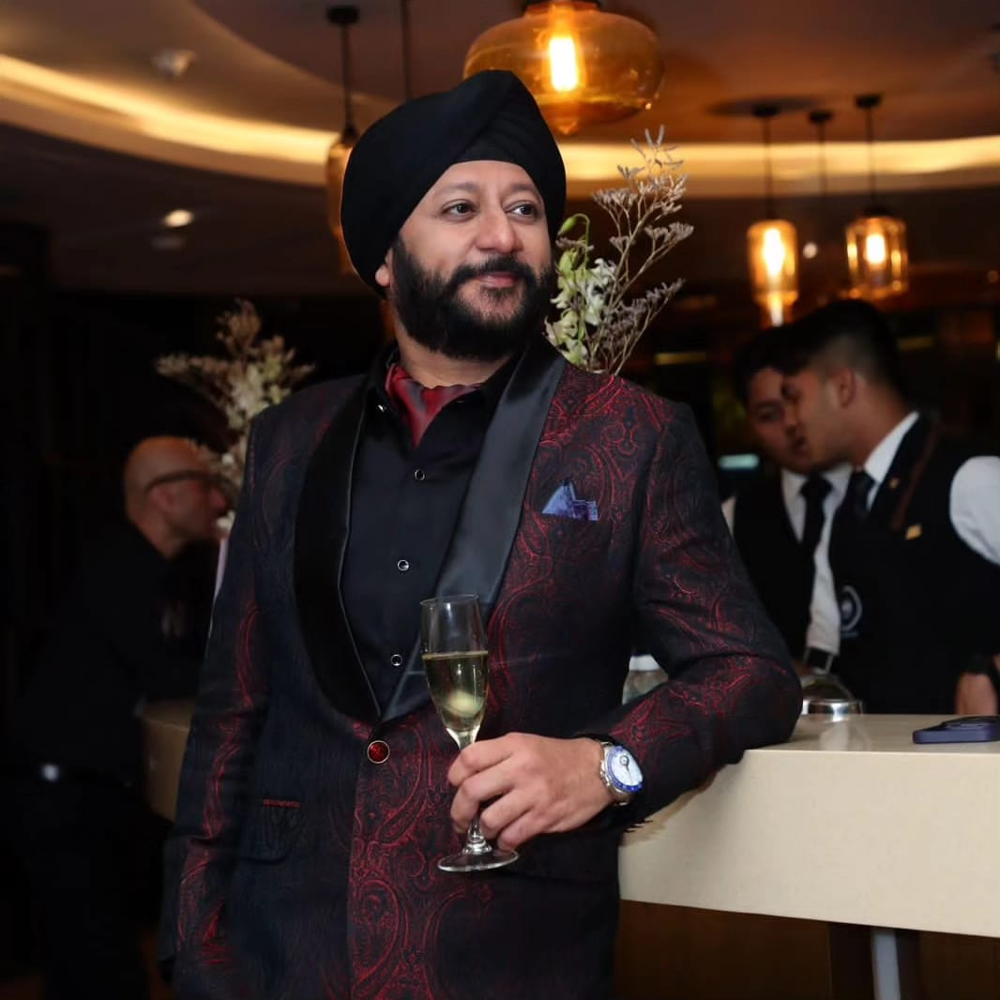
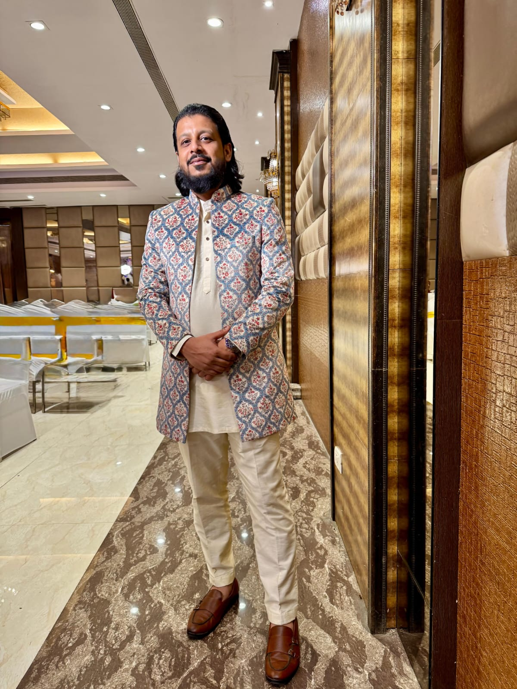
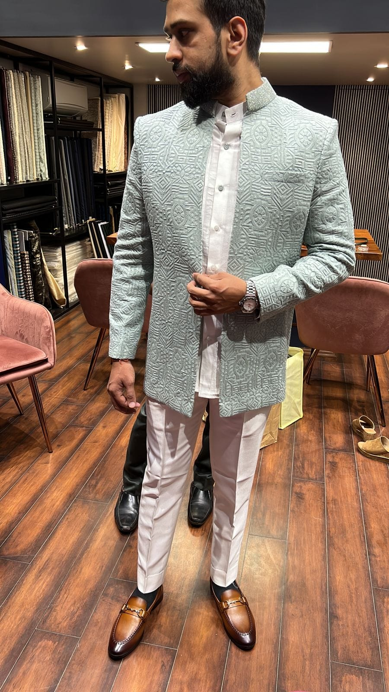
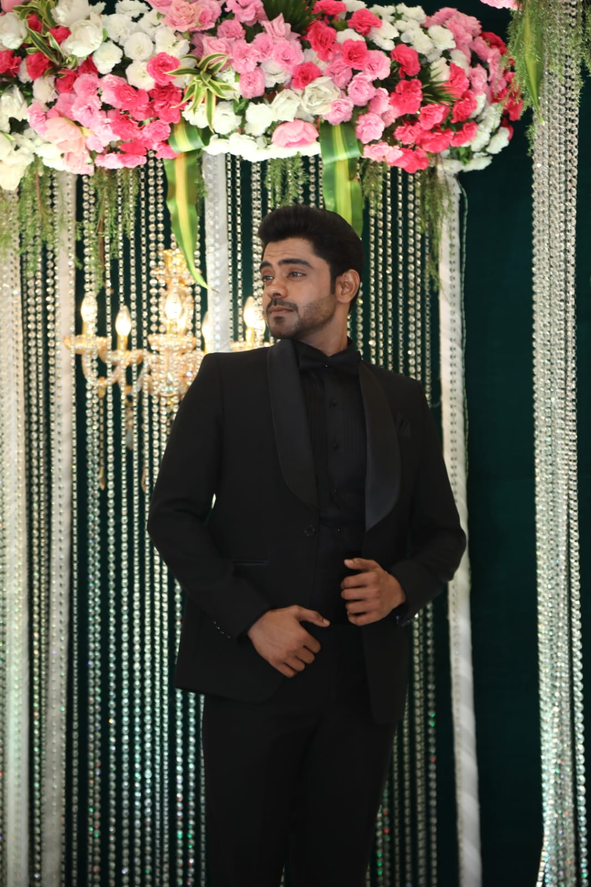
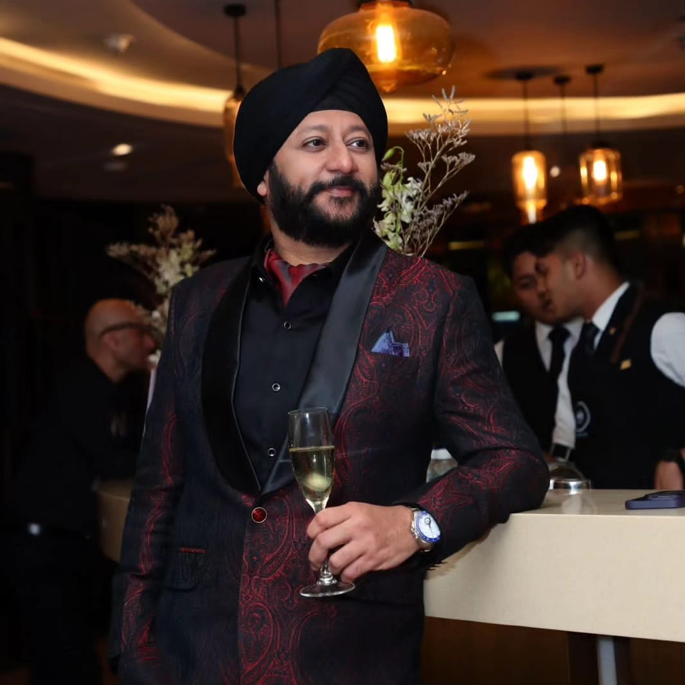
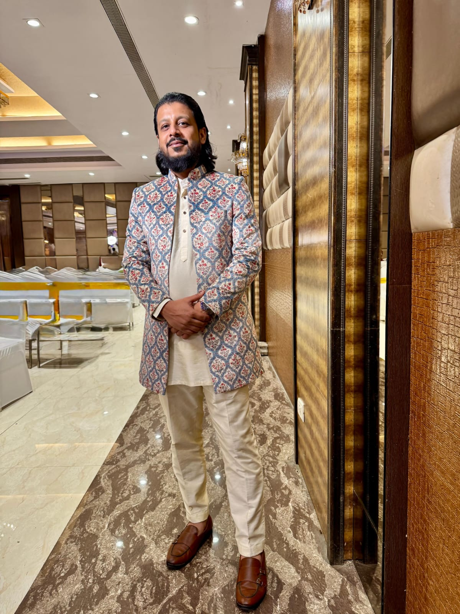
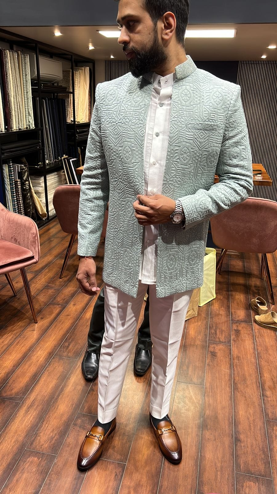
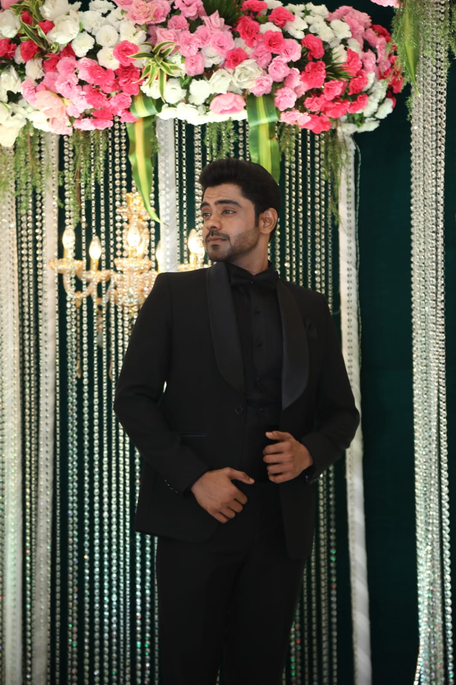

Lapels & Cuffs Men’s Bespoke** is a premier tailoring company dedicated to crafting personalized and high-quality men's apparel. With a focus on craftsmanship and attention to detail, we specialize in bespoke suits, jackets, and accessories that reflect each client's unique style and personality. Our team of experienced tailors combines traditional techniques with modern design to deliver garments that fit perfectly and exude sophistication. For a personalized experience, please schedule an appointment with us, ensuring you receive dedicated, attentive service in a relaxed and private setting. At Lapels & Cuffs, we are committed to providing exceptional service, ensuring every piece is crafted to perfection with the finest materials. Whether you're preparing for a special occasion or seeking everyday elegance, our bespoke offerings are designed to elevate your wardrobe with timeless style and unmatched quality.

 






